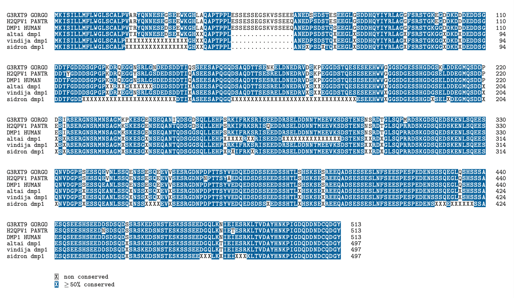

The method and database information was from following journal article: https://www.ncbi.nlm.nih.gov/pmc/articles/PMC5597096/.
The objective was to discover missense variants that could help explain the differences in dentition between Neanderthals and modern humans.
#read fasta
library(seqinr)
#multiple sequence alignment
library(msa)## Loading required package: Biostrings## Loading required package: BiocGenerics## Loading required package: parallel##
## Attaching package: 'BiocGenerics'## The following objects are masked from 'package:parallel':
##
## clusterApply, clusterApplyLB, clusterCall, clusterEvalQ,
## clusterExport, clusterMap, parApply, parCapply, parLapply,
## parLapplyLB, parRapply, parSapply, parSapplyLB## The following objects are masked from 'package:stats':
##
## IQR, mad, sd, var, xtabs## The following objects are masked from 'package:base':
##
## anyDuplicated, append, as.data.frame, basename, cbind, colnames,
## dirname, do.call, duplicated, eval, evalq, Filter, Find, get, grep,
## grepl, intersect, is.unsorted, lapply, Map, mapply, match, mget,
## order, paste, pmax, pmax.int, pmin, pmin.int, Position, rank,
## rbind, Reduce, rownames, sapply, setdiff, sort, table, tapply,
## union, unique, unsplit, which.max, which.min## Loading required package: S4Vectors## Loading required package: stats4##
## Attaching package: 'S4Vectors'## The following objects are masked from 'package:base':
##
## expand.grid, I, unname## Loading required package: IRanges## Loading required package: XVector## Loading required package: GenomeInfoDb##
## Attaching package: 'Biostrings'## The following object is masked from 'package:seqinr':
##
## translate## The following object is masked from 'package:base':
##
## strsplit#read in fasta using seqinr
altai <- read.fasta("Altai.txt", seqtype="AA",as.string=TRUE)
vindija <- read.fasta("Vindija.txt", seqtype="AA",as.string=TRUE)
sidron <- read.fasta("Sidron.txt", seqtype="AA",as.string=TRUE)msa_maker<- function(gene_name, ensg_num, hcg_fasta_name, combined_fasta_name){
#Part 1: Create a combined fasta
#Read in fasta with human, chimp, and gorilla
hcg_fasta <- read.fasta(hcg_fasta_name, seqtype="AA",as.string=TRUE,set.attributes = FALSE)
#changed the original sequence names because they were too long and made the final msa look messy
hcg_names <- sapply(strsplit(names(hcg_fasta), "|", fixed=TRUE),"[[", 3)
#write into new combined fasta
write.fasta(hcg_fasta, names=hcg_names,file.out = combined_fasta_name, open="w", as.string=TRUE)
#find the protein in the Neanderthal Data and write it into the combined fasta file
#Altai
#sequence name in file is in the form of ENSGXXXX_ENSTXXXX, grep used to just search with the ENSG info
altai_index<-grep(ensg_num,attributes(altai)$names)[[1]]
altai_filtered<- altai[altai_index]
#write into new combined fasta
write.fasta(paste(altai_filtered)[1], paste0("altai_",gene_name),file.out = combined_fasta_name, open="a", as.string=TRUE)
#Vindija
vindija_index<-grep(ensg_num,attributes(vindija)$names)[[1]]
vindija_filtered<-vindija[vindija_index]
write.fasta(paste(vindija_filtered)[1], paste0("vindija_", gene_name),file.out = combined_fasta_name, open="a", as.string=TRUE)
#Sidron
sidron_index<-grep(ensg_num,attributes(sidron)$names)[[1]]
sidron_filtered<-sidron[sidron_index]
write.fasta(paste(sidron_filtered)[1], paste0("sidron_", gene_name),file.out = combined_fasta_name, open="a", as.string=TRUE)
#Part 2: align the sequences using multiple sequence alignment
sequences <- Biostrings::readAAStringSet(combined_fasta_name)
msa <-msa::msa(
inputSeqs=sequences,
method = "ClustalW"
)
return(msa)
}#why is index of each sequence needed? The msa before can arrange the sequences not necessarily in the order inputted
missense_finder<-function(completed_msa,human_index, gorilla_index, chimp_index, altai_index, vindija_index, sidron_index){
#convert the msa to another format so that I can work with it
convert_msa <- msaConvert(completed_msa,"seqinr::alignment")
missense_list<-c()
#go through entire alignment
for (i in 1:nchar(convert_msa$seq[1])){
#if the human amino acid doesn't match the altai, add to the stored list
if ((substr(convert_msa$seq[human_index],i,i)!=substr(convert_msa$seq[altai_index],i,i))&&(substr(convert_msa$seq[altai_index],i,i)!="X")&&(substr(convert_msa$seq[human_index],i,i)!="-")&&(substr(convert_msa$seq[altai_index],i,i)!="-")){
#stored in the order human, gorilla, chimp, altai, vindija, sidron
amino_list<-c(i,substr(convert_msa$seq[human_index],i,i),substr(convert_msa$seq[gorilla_index],i,i),substr(convert_msa$seq[chimp_index],i,i),substr(convert_msa$seq[altai_index],i,i),substr(convert_msa$seq[vindija_index],i,i),substr(convert_msa$seq[sidron_index],i,i))
missense_list=rbind(missense_list, amino_list)
}
#if human amino acid doesn't match the vindija, add to the stored list
else if ((substr(convert_msa$seq[human_index],i,i)!=substr(convert_msa$seq[vindija_index],i,i))&&(substr(convert_msa$seq[vindija_index],i,i)!="X")&&(substr(convert_msa$seq[human_index],i,i)!="-")&&(substr(convert_msa$seq[vindija_index],i,i)!="-")){
#stored in the order human, gorilla, chimp, altai, vindija, sidron
amino_list<-c(i,substr(convert_msa$seq[human_index],i,i),substr(convert_msa$seq[gorilla_index],i,i),substr(convert_msa$seq[chimp_index],i,i),substr(convert_msa$seq[altai_index],i,i),substr(convert_msa$seq[vindija_index],i,i),substr(convert_msa$seq[sidron_index],i,i))
missense_list=rbind(missense_list, amino_list)
}
#if human amino acid doesn't match the sidron, add to the stored list
else if ((substr(convert_msa$seq[human_index],i,i)!=substr(convert_msa$seq[sidron_index],i,i))&&(substr(convert_msa$seq[sidron_index],i,i)!="X")&&(substr(convert_msa$seq[human_index],i,i)!="-")&&(substr(convert_msa$seq[sidron_index],i,i)!="-")){
#stored in the order human, gorilla, chimp, altai, vindija, sidron
amino_list<-c(i,substr(convert_msa$seq[human_index],i,i),substr(convert_msa$seq[gorilla_index],i,i),substr(convert_msa$seq[chimp_index],i,i),substr(convert_msa$seq[altai_index],i,i),substr(convert_msa$seq[vindija_index],i,i),substr(convert_msa$seq[sidron_index],i,i))
missense_list=rbind(missense_list, amino_list)
}
}
colnames(missense_list)<- c("position","human","gorilla","chimpanzee","altai","vindija", "sidron")
return(missense_list)
}dmp1_msa<-msa_maker("dmp1", "ENSG00000152592", "uniprot_dmp1.fasta", "combined_dmp1.fasta")## use default substitution matrix#pretty print the aligned sequence in a pdf file using the following line
#msaPrettyPrint(dmp1_msa,file=paste0("dmp1",".pdf"),askForOverwrite=FALSE, showLogo="none",showConsensus = "none")
missense_finder(dmp1_msa, 3, 1, 2, 4, 5, 6)## position human gorilla chimpanzee altai vindija sidron
## amino_list "483" "N" "N" "N" "T" "T" "X"